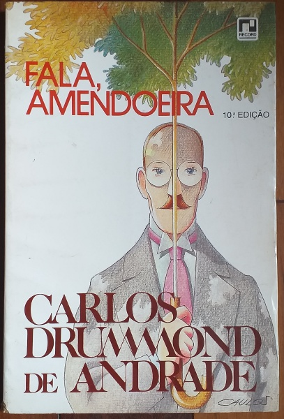

Drummond foi também um grande cronista, observando o cotidiano com humor, ironia e sensibilidade.

Crônicas leves e reflexivas sobre o cotidiano brasileiro.
Textos que misturam humor, crítica e observação social.
Crônicas urbanas que revelam o olhar atento do autor.